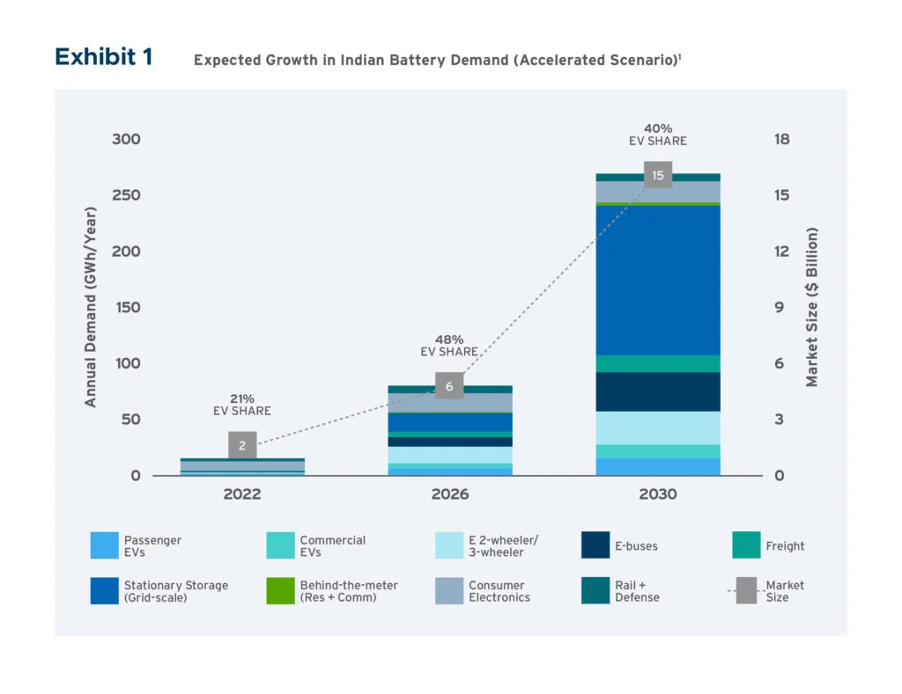
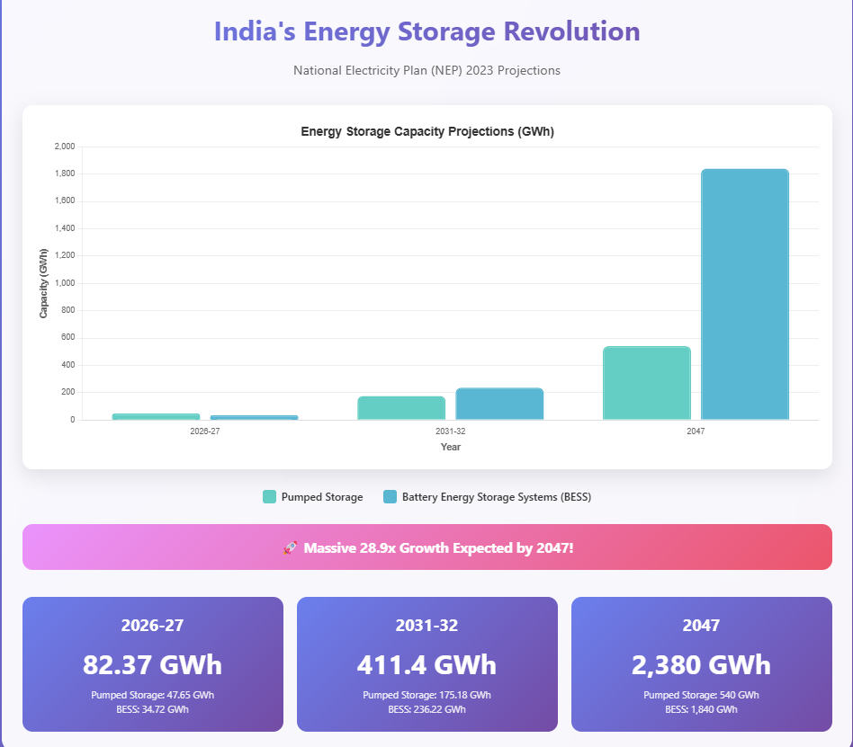
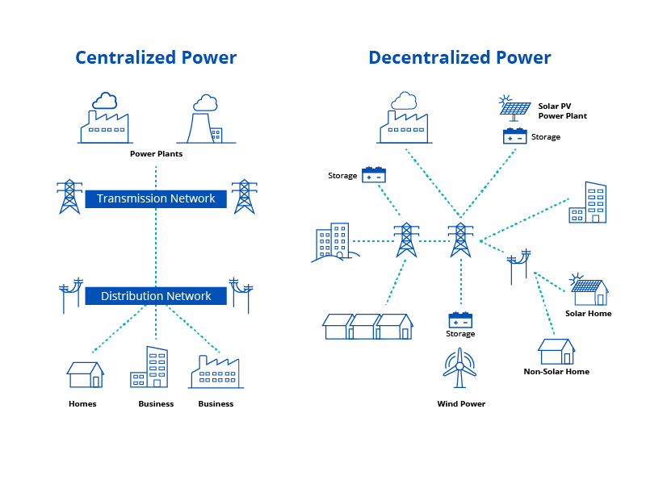
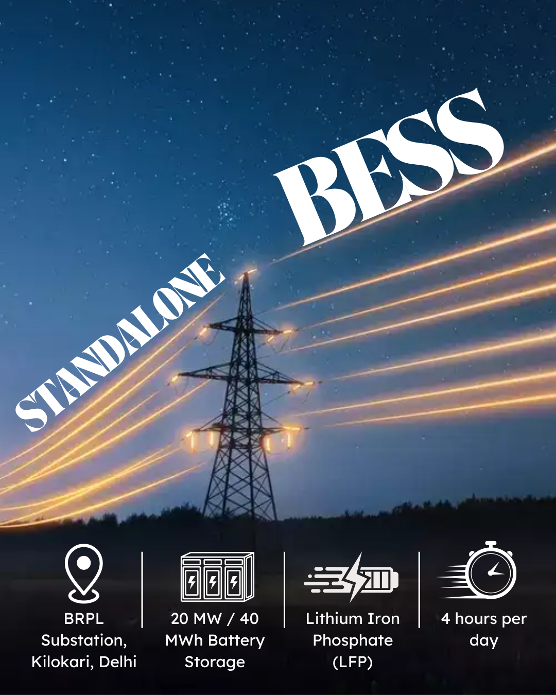
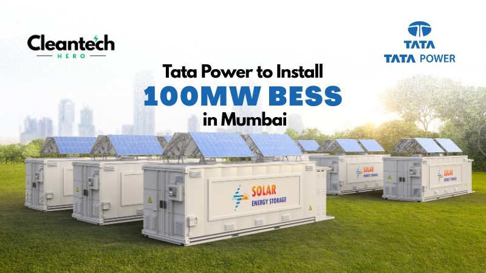
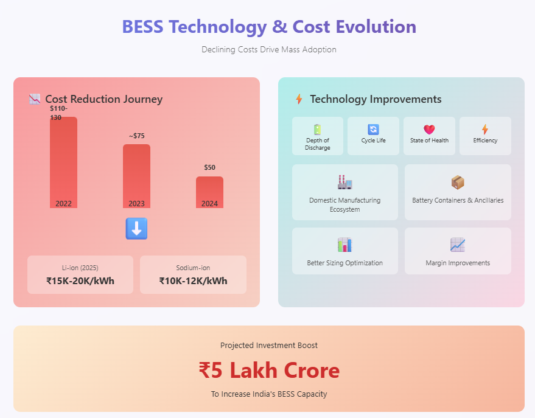
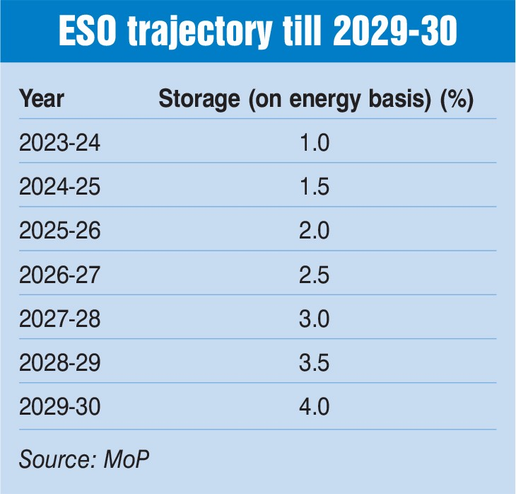
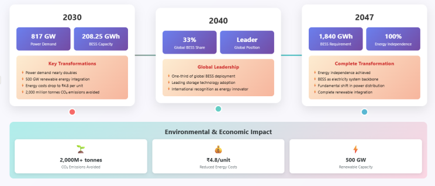

Battery Energy Storage Systems (BESS) are fundamentally transforming India's power distribution landscape, marking a pivotal shift from traditional grid models to modern, flexible, and resilient energy infrastructure. As India pursues its ambitious renewable energy targets and aims for energy independence by 2047, BESS technology has emerged as the critical enabler bridging the gap between intermittent renewable generation and reliable power distribution.
With the country's first utility-scale standalone BESS project successfully commissioned in Delhi and massive investments projected to reach ₹4.79 lakh crore by 2032, India stands at the threshold of a revolutionary change in how electricity is distributed and managed across the nation.

The Current Energy Storage Landscape
Market Size and Growth Trajectory
India's battery energy storage capacity reached 219.1 MWh as of March 2024, with solar photovoltaic systems combined with BESS accounting for 90.6% of the total installed capacity. The market is experiencing unprecedented growth, with capacity installations in Q1 2024 totaling 120 MWh (40 MW). Industry projections indicate that India's BESS market will expand from less than 0.2 GW currently to 66 GW by 2032, representing a sevenfold increase in capacity.
The sector is poised for explosive growth, with the BESS market expanding from $481.5 million in 2023 to $5.3 billion by 2030, reflecting a compound annual growth rate of 40.9%. This remarkable trajectory is supported by government policies and declining technology costs that have made BESS increasingly viable for large-scale deployment.
National Energy Storage Requirements
According to the National Electricity Plan (NEP) 2023, India's energy storage capacity requirement is projected to be 82.37 GWh in 2026-27, comprising 47.65 GWh from pumped storage projects and 34.72 GWh from BESS. This requirement is expected to surge to 411.4 GWh by 2031-32, with BESS contributing 236.22 GWh. Looking ahead to 2047, the total energy storage requirement is projected to reach an enormous 2,380 GWh, with BESS accounting for 1,840 GWh.

Revolutionary Changes in Power Distribution Models
From Centralized to Distributed Storage
BESS is fundamentally altering India's power distribution paradigm by enabling decentralized energy storage at the distribution level. Traditional power distribution models relied heavily on centralized generation and one-way power flow, but BESS introduces bidirectional capabilities that allow distribution companies (discoms) to store excess energy during low-demand periods and discharge it during peak hours.
This transformation enables discoms to manage their load more effectively, improving power quality and ensuring 24/7 reliable power supply. The integration of BESS at distribution substations, as demonstrated by the landmark Kilokari project in Delhi, represents a new model where storage assets can provide multiple grid services simultaneously.

Grid Stability and Ancillary Services
BESS technology is redefining how grid stability is maintained in India's power distribution network. Unlike traditional coal-fired power plants that historically provided system flexibility, BESS can rapidly ramp up and down their output, making them more effective in meeting system flexibility requirements. These systems provide critical ancillary services including frequency regulation, voltage support, and spinning reserves.
The advanced capabilities of BESS include black start functionality, which enables swift recovery of power supply to critical infrastructure in case of grid disturbances. This capability is particularly valuable for preventing large-scale blackouts and enhancing the resilience of urban power networks.
Peak Load Management and Cost Optimization
BESS is revolutionizing peak load management strategies across India's distribution network. By storing energy during low-cost periods and utilizing it during high-cost peak hours, BESS helps reduce power purchase costs for discoms while ensuring stable power supply during high-demand periods. This arbitrage capability is becoming increasingly valuable as renewable energy penetration increases and creates greater price volatility in electricity markets.
The technology also enables capital expenditure deferral by minimizing the need for costly infrastructure upgrades, as BESS can efficiently manage load fluctuations with stored energy. This represents a fundamental shift from traditional approaches that required building additional generation or transmission capacity to meet peak demand.
Landmark Projects Demonstrating New Models
The Kilokari BESS Project: A Template for the Future
India's first utility-scale standalone BESS project, the 20 MW/40 MWh facility at BSES Rajdhani Power Limited Kilokari substation in Delhi, serves as a blueprint for future distribution-level storage deployments. Commissioned in March 2025, this project demonstrates how BESS can be integrated into existing distribution infrastructure to provide multiple value streams.
The project, developed in partnership between IndiGrid , The Global Energy Alliance for People and Planet , and AmpereHour Energy , achieved a groundbreaking tariff that is approximately 55% lower than previous benchmark rates. This cost reduction demonstrates the economic viability of the new distribution model and sets a precedent for replication across other utilities.

Tata Power's Mumbai Initiative
TATA Power approval to install a 100 MW BESS across 10 strategic locations in Mumbai represents another evolution in distribution-level storage deployment. This distributed approach, rather than a single large installation, demonstrates how BESS can be strategically positioned near load centers to maximize grid benefits while ensuring system reliability.
The Mumbai project incorporates sophisticated technology for reactive power management and peak demand efficiency, showcasing how BESS can address multiple distribution challenges simultaneously. The system will be centrally monitored and controlled from Tata Power's Power System Control Center, representing an advanced model of grid management.

Technology and Cost Evolution
Declining Costs Drive Adoption
The dramatic reduction in BESS costs has been instrumental in enabling new distribution models. Battery cell costs have decreased by approximately 40% between 2023 and 2024, with recent lithium iron phosphate (LFP) cell costs reported at around $50/kWh in China. This represents a significant decline from average cell costs of $110-130/kWh in 2022.
Current cost estimates for 2025 indicate lithium-ion battery systems are priced at ₹15,000-₹20,000 per kWh, while emerging sodium-ion batteries are expected to cost ₹10,000-₹12,000 per kWh. These cost reductions have made BESS economically competitive with traditional grid infrastructure solutions.

Technology Improvements and Ecosystem Development
Critical performance parameters including depth of discharge, cycle life, state of health, and efficiency for lithium-ion cells have shown continuous improvements. These technological advances, combined with the development of a stable ecosystem for battery containers and ancillaries in India, have contributed to better sizing optimization and margin improvements.
The domestic manufacturing ecosystem is expanding rapidly, with the battery manufacturing sector expected to receive a significant boost from projected investments of ₹5 lakh crore to increase India's BESS capacity. This local manufacturing capability is crucial for reducing import dependence and further driving down costs.
Policy Framework Enabling Transformation
Energy Storage Obligations
India has implemented groundbreaking Energy Storage Obligations (ESO) alongside its Renewable Purchase Obligations, mandating that entities procure a minimum percentage of energy from renewable sources with storage. The ESO trajectory requires 1% of total energy consumption to come from solar and/or wind with storage in 2023-24, gradually increasing to 4% by 2029-30.
This policy framework creates guaranteed demand for BESS projects and provides long-term visibility for investors and developers. The requirement that at least 85% of energy procured and stored annually must come from renewable sources ensures that BESS deployment directly supports renewable energy integration.

Viability Gap Funding and Incentives
The government's Viability Gap Funding (VGF) scheme provides up to 40% of capital costs for BESS projects, significantly improving project economics. This support has been instrumental in reducing tariffs, with VGF-supported projects demonstrating approximately 40% lower tariffs compared to non-VGF projects.
Additional policy support includes 100% customs duty waivers on battery imports, 10-year transmission charge exemptions, and Production-Linked Incentive (PLI) schemes for advanced chemistry cell battery storage. These comprehensive incentives create a favorable environment for large-scale BESS deployment across distribution networks.

Market Dynamics and Investment Opportunities
Massive Investment Requirements
India's energy storage sector is projected to attract investments of ₹4.79 lakh crore by 2032, with the sector expected to expand fivefold between 2026 and 2032. According to industry projections, approximately ₹5.4 lakh crore in investment will be required over the next six years to meet the country's storage capacity targets.
The investment opportunity is driven by the projected requirement of 73.93 GW of energy storage capacity by 2031-32, comprising 26.69 GW from pumped storage plants and 47.24 GW from BESS. This represents a total energy storage capacity requirement of 411.4 GWh.

Regional Distribution and Development
Different states are emerging as leaders in BESS deployment, with Chhattisgarh accounting for 54.8% of cumulative installed capacity as of March 2024. Major investment commitments are being made in states like Rajasthan (23 GW), Andhra Pradesh (14 GW), and Karnataka (3 GW).
The standalone energy storage market has seen 6.1 GW of tenders issued in the first quarter of 2025 alone, accounting for 64% of all utility-scale energy storage tendering activity. This rapid tendering activity demonstrates the urgency with which India is pursuing storage deployment to support its renewable energy transition.

Future Outlook and Projections
Transformation by 2030
India's power demand is forecasted to nearly double to 817 GW by 2030, requiring significant evolution in distribution infrastructure. The BESS market is projected to expand to 208.25 GWh by 2030, playing a crucial role in managing this increased demand while integrating 500 GW of renewable energy capacity.
The widespread adoption of BESS could help India avoid over 2,000 million tonnes of CO₂ emissions, making it a critical component of the country's climate goals. Energy costs are projected to decrease to ₹4.8 per unit through strategic BESS deployment, benefiting consumers while improving grid efficiency.

Long-term Vision to 2047
Looking toward India's goal of energy independence by 2047, BESS will play an increasingly central role in power distribution models. The projected requirement of 1,840 GWh of BESS capacity by 2047 indicates that storage will become the backbone of India's future electricity system.
The International Energy Agency (IEA) projects that India's share could reach one-third of global BESS deployment by 2040, positioning the country as a global leader in storage technology adoption. This transformation will fundamentally alter how electricity is generated, stored, and distributed across the nation.
Challenges and Solutions
Infrastructure and Supply Chain Development
The standalone energy storage sector faces structural challenges related to supply chains, manufacturing, and financing. However, the rapid development of domestic manufacturing capabilities and component supply chains is addressing these constraints.
Project cancellations, supply-chain constraints, and power purchase agreement delays continue to pose challenges. The industry is responding by developing more robust contracting mechanisms and establishing clearer regulatory frameworks for storage deployment.
Grid Integration and Technical Standards
The integration of large-scale BESS into distribution networks requires sophisticated grid management capabilities and adherence to international safety standards. India is developing comprehensive safety protocols including thermal management systems, fire suppression systems, and cybersecurity measures for grid-connected BESS.
Conclusion
BESS technology is fundamentally redefining India's power distribution models, transforming the sector from a centralized, unidirectional system to a flexible, resilient, and intelligent grid. The successful deployment of India's first utility-scale standalone BESS project and the massive investment commitments signal the beginning of a new era in power distribution.